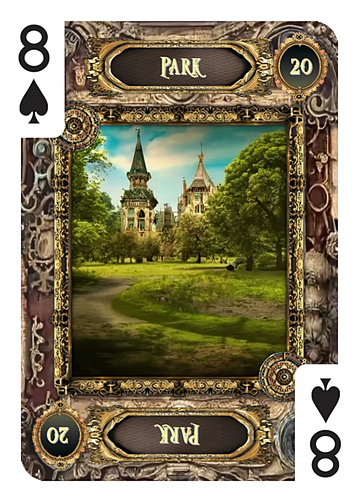
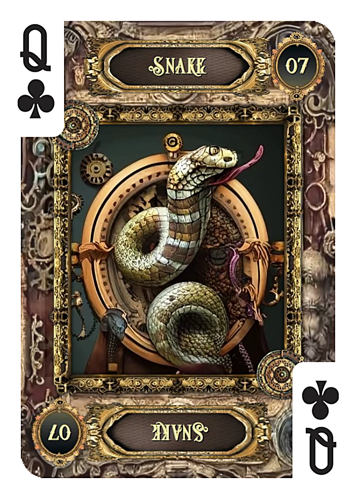
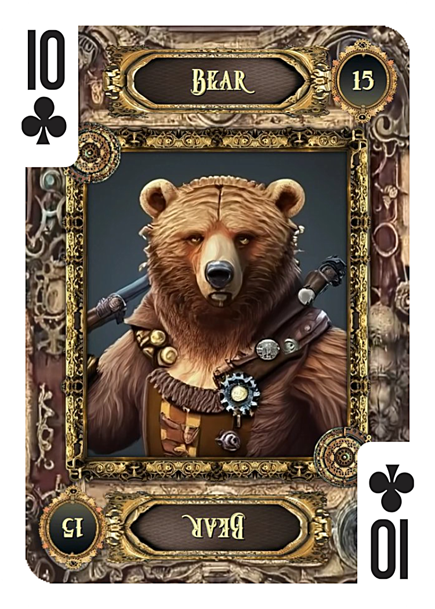
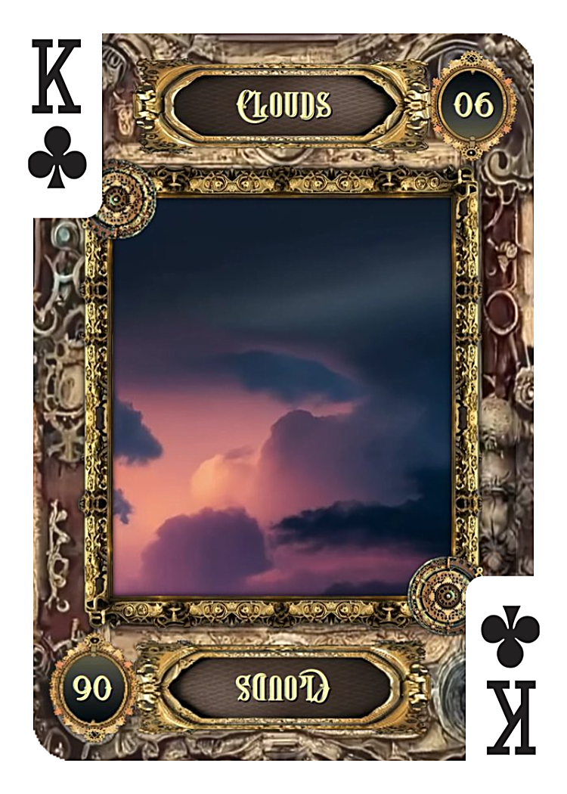

① 6月中に連絡は来る？カード結果
- 1枚目 庭
- 2枚目 蛇
- 3枚目 熊
- バックカード 雲
今回のカードは「連絡そのものは途切れていないが、相手側の事情によって停滞している状態」を示しています。
完全な終了を示すカードは見当たりません。
しかし、スムーズに進展する流れでもなく、複雑な状況の中で相手が動きづらくなっている印象があります。
② 庭・蛇・熊・雲の意味

庭｜人とのつながりは残っている
庭は交流や人間関係を表すカードです。連絡や再会、コミュニケーションとも関係が深く、「ご縁そのものは続いている」ことを示しています。
連絡の可能性を否定するカードではありません。

蛇｜素直に進まない事情
蛇は複雑さや遠回りを意味します。相手が迷っている、何か障害がある、あるいは第三者が関係している可能性もあります。
連絡したい気持ちはあっても、すぐに行動へ移せない事情がありそうです。

熊｜強い責任やプレッシャー
熊は責任感や権力、仕事上の重圧を表します。相手は現在、自分の問題よりも優先しなければならないことを抱えている可能性があります。
恋愛より仕事や立場を優先している状態とも読めます。

雲｜まだ結果は決まっていないBACK
バックカードの雲は不透明な状況を示します。先が見えず、相手自身もどう動くべきか迷っている様子がうかがえます。
ただし雲は永続的なカードではありません。時間の経過とともに状況が変化することも示しています。
③ 相手の気持ちと現状
カード全体からは、「連絡を完全に断とうとしている」という印象は受けません。
むしろ、忙しい・考え事が多い・人間関係が複雑・優先すべき問題があるといった事情が見えてきます。
相手の意識は自分の課題に向いており、恋愛や連絡が後回しになっている可能性が高そうです。
④ 連絡が遅れている理由
今回のキーカードは蛇です。蛇は一直線ではなく、回り道を意味します。
そのため、「今連絡してもいいのだろうか」「もう少し状況が落ち着いてからにしよう」と考えている可能性があります。
気持ちがないというよりも、タイミングを見計らっている状態に近いでしょう。
⑤ 今後の展開予想
庭が出ていることから、人とのつながりは維持されています。そのため、今後まったく動きがないというよりは、状況が整理されたタイミングで連絡が入る可能性があります。
ただし、蛇と雲があるため予定通りには進みにくく、時期のズレや予想外の展開も考えられます。
6月中については「可能性あり。ただし相手都合で遅れる可能性も高い」という読みになります。
まとめ
「庭・蛇・熊・雲」の組み合わせは、以下のメッセージを伝えています。
- ご縁は続いている
- 相手は複雑な事情を抱えている
- 強い責任やプレッシャーがある
- 現状は不透明
- 連絡の可能性は残されている
焦って結論を出す時期ではなく、相手の状況が整理されるのを待つ流れです。
雲はやがて晴れるカードでもあります。今は未来を決めつけず、状況の変化を静かに見守ることが大切なのかもしれません。